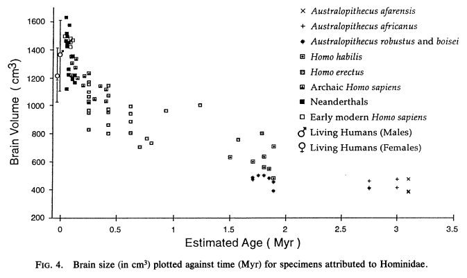

Argumentos Criacionistas: Tamanhos dos Cérebros
Brain sizes(*) vary considerably within any species, but this variation is not usually related to intelligence. Instead, it correlates loosely with body size: large people tend to have larger brains. As a result, women on average will have smaller brains than men, and Pygmies will have smaller brains than Zulus, but the average intelligence of all these groups is, as far as we can tell, the same.(*) Nota: por conveniência, uso o termo "tamanho do cérebro" em vez de "capacidade craniana". Como o cérebro não preenche a cavidade craniana, o tamanho do cérebro é menor que a capacidade craniana, mas este último valor é, obviamente, o único que pode ser determinado a partir de um crânio.
Os valores para o tamanho médio do cérebro dos humanos modernos tendem a variar entre as fontes, mas um valor típico é de 1350 ou 1400 cc (centímetros cúbicos). Os seguintes valores devem transmitir uma noção da faixa normal de variação nos crânios humanos. Burenhult (1993) afirma que 90% dos humanos se enquadram na faixa de 1040-1595 cc, e que a faixa extrema é de 900-2000 cc. S.J. Gould, em "A Medida do Homem", revisou um estudo do século XIX de Morton sobre 600 crânios que variaram de 950 a 1870 cc (e 25% dessa amostra era de peruanos de baixa estatura, portanto, o valor de 950 cc é, se for o caso, menor do que poderia ser para 600 humanos selecionados aleatoriamente). Morton também catalogou seus crânios por raça, com a menor média para qualquer grupo racial sendo de 1230 cc.
Várias fontes, algumas delas criacionistas, fornecem limites inferiores para o tamanho do cérebro humano de 900 ou 830 cc. O proeminente anatomista britânico Sir Arthur Keith, em 1948, estabeleceu 855 cc como o menor volume cerebral humano conhecido (em comparação com 650 cc, que era o maior volume cerebral conhecido na época para um gorila). Humanos normais com cérebros ainda menores foram encontrados, mas são muito raros. Microcefálicos, que apresentam inteligência subnormal, podem ter volumes tão baixos quanto 600 cc, mas esta é uma condição patológica e tais crânios não podem ser considerados normais.
Hrdlicka (1939) examinou os extremos de tamanho cerebral em 12.000 crânios americanos armazenados nas coleções do Museu Nacional dos EUA. Desses, os 29 menores, ou menos de 1 em 400, variaram de 910 a 1050 cc. Hrdlicka afirma que o menor crânio nesta coleção, com 910 cc, parece ser o menor volume já medido para um crânio humano normal. Os crânios de baixo volume não eram primitivos ou aberrantes de qualquer forma; seu pequeno volume era meramente resultado do pequeno tamanho do crânio inteiro. Assim, embora a faixa inferior extrema dos tamanhos cerebrais humanos modernos se sobreponha à de Homo erectus, seus crânios são muito diferentes: em H. erectus, o caso craniano é realmente menor em relação ao resto do crânio. Em humanos modernos pequenos, as proporções do crânio são normais e o tamanho cerebral é pequeno apenas porque o crânio é pequeno. (Compare o crânio do Menino de Turkana com um humano moderno aqui.)
Compare as figuras acima com os 5 crânios mensuráveis do Homem de Java. Estes média 930 cc, menos que o mínimo dos 600 crânios modernos citados acima, com o menor sendo de 815 cc. Além disso, ao contrário dos humanos modernos com tamanhos cerebrais baixos, estes crânios são muito robustos, com caixas cranianas achatadas e grandes cristas supraorbitárias.
Essas figuras também mostram o quanto o Turkana Boy é extraordinário. Como adulto, ele teria sido cerca de 183 cm (6'0") de altura, grande até mesmo pelos padrões modernos. Homens modernos dessa estatura teriam, espera-se, um tamanho cerebral maior que a média, mas o tamanho cerebral adulto estimado do Turkana Boy de 910 cc é menor que todos, exceto uma fração de 1% dos humanos modernos de todos os tamanhos e ambos os sexos. Para comparação, 900 cc é um tamanho cerebral típico para uma criança moderna de 3 ou 4 anos pesando 15 kg (33 lbs).
O criacionista Marvin Lubenow (1992) afirma que o limite inferior da capacidade craniana humana é de 700 cc, uma figura muito menor do que qualquer outra. Sua fonte é Races, Types and Ethnic Groups de Stephen Molnar. Molnar diz que "existem muitas pessoas com 700 a 800 centímetros cúbicos", mas não fornece nenhuma fonte para essas informações, e nenhuma de suas fontes parece fazê-lo também. Na verdade, uma de suas fontes contradiz Molnar (e Lubenow). Tobias (1970) afirma que, de acordo com Dart, "pessoas humanas aparentemente normais já existiram com tamanhos de cérebro na faixa dos 700 e dos 800" (talvez a afirmação de Molnar seja uma distorção disso), e que a menor capacidade craniana alguma vez documentada é de 790 cc.
Isso contradiz fortemente a alegação de Molnar de que "muitos" humanos modernos têm uma capacidade craniana abaixo de 800 cc, e a alegação derivada de Lubenow de que qualquer valor acima de 700 cc é um valor "normal". Pelo contrário, parece que, a partir de uma variedade de fontes, valores abaixo de 900 cc são excepcionalmente raros, e valores abaixo de 800 cc são praticamente inexistentes.
Mesmo que humanos excepcionais fossem encontrados com um volume craniano tão baixo quanto 700 cc, ainda é implausível que Lubenow afirme (p.162) que ER 1470, com 750-775 cc, esteja "bem dentro da faixa normal humana". (Da mesma forma, poderia-se válidamente afirmar que uma altura adulta de 122 cm (4'0") está bem dentro da faixa normal com base no fato de que algumas pessoas têm apenas 107 cm (3'6") de altura.) Tais casos, se até mesmo ocorrem, são obviamente excepcionalmente raros, e a probabilidade de encontrar um crânio de humano fóssil com um cérebro tão pequeno é essencialmente zero. É muito mais provável que 1470 tenha sido um membro bastante típico de sua população. É isso que encontramos: outros fósseis de habilis, muito semelhantes a 1470, são ainda menores e bem abaixo do limite inferior de 700 cc estabelecido por Lubenow.
Os chimpanzés têm um tamanho cerebral entre 300 e 500 cc, com uma média de 400 cc. Os gorilas têm um tamanho cerebral médio de 500 cc, com indivíduos grandes chegando a 700 cc, ou até 752 cc em um caso relatado (mas não verificável). Os hominídeos são melhor comparados com os chimpanzés de tamanho semelhante do que com os gorilas muito maiores.
Lubenow afirma que "o elemento crucial não é o tamanho do cérebro, mas a organização do cérebro. Um cérebro de gorila grande não está mais próximo da condição humana do que um cérebro de gorila pequeno". O ponto de Lubenow está correto. Se a evolução for verdadeira, criaturas transicionais com tamanhos de cérebro entre 650 e 800 cc devem ter existido, mas encontrar um crânio com tal tamanho de cérebro não prova que seu dono era uma forma transicional. Para ser uma forma transicional convincente, um crânio não deve ter apenas um tamanho de cérebro intermediário, mas também uma morfologia intermediária.
Isso é exatamente o que se encontra em alguns fósseis de H. habilis. Embora não existam fósseis de habilinos para os quais seja possível medir tanto o tamanho do cérebro quanto o do corpo, é bastante claro que eles eram menores que os humanos e, muitas vezes, menores que os gorilas machos, os únicos grandes símios com tamanhos de cérebro comparáveis. Além disso, os crânios de H. habilis não possuem as cristas e as cristas ósseas encontradas nos crânios de grandes símios. Além disso, o interior de seus crânios apresenta muitas características modernas (Tobias 1987). Eles são tanto maiores quanto mais modernos, internamente e externamente, do que o crânio de qualquer grande símio de tamanho comparável.
Entre as espécies, o tamanho médio do cérebro, quando aplicada uma fórmula corretiva para o tamanho corporal, é um indicador razoável da inteligência relativa. Os resultados são aproximados, pois dependem de qual fórmula é utilizada, bem como do tamanho do cérebro e do corpo, ambos difíceis de estimar para a maioria dos hominídeos fósseis. No entanto, parece que os australopitecinos eram tão inteligentes quanto, ou provavelmente um pouco mais inteligentes que, os chimpanzés. Homo habilis e erectus estavam intermediários entre os chimpanzés e os humanos modernos. Walker e Leakey (1993) e Tobias (1987) possuem excelentes resumos sobre tentativas de estimar a inteligência relativa das espécies de hominídeos.
O gráfico a seguir, de McHenry (1994), que plota tamanhos cerebrais contra o tempo, mostra uma tendência geral de aumento do tamanho cerebral ao longo do tempo para os hominídeos:

Referências
Burenhult G. (1993): Os primeiros humanos: origens humanas e história até 10.000 a.C. Nova York: HarperCollins.
Hrdlicka A. (1939): Microcefalia e macrocefalia normais na América. American Journal of Physical Anthropology, 25:1-91.
Lubenow M.L. (1992): Ossos de controvérsia: uma avaliação criacionista de fósseis humanos. Grand Rapids, MI: Baker Books.
McHenry H.M. (1994): Tempo e modo na evolução humana. Proceedings of the National Academy of Sciences, USA, 91:6780-6.
Tobias P.V. (1970): Tamanho do cérebro, matéria cinzenta e raça - fato ou ficção? American Journal of Physical Anthropology, 32:3-31.
Tobias P.V. (1987): O cérebro de Homo habilis: um novo nível de organização na evolução cerebral. Journal of Human Evolution, 16:741-61.
Walker A.C. e Leakey R.E. (1993): O esqueleto de Homo erectus de Nariokotome. Cambridge, MA: Harvard University Press.
Esta página faz parte do FAQ sobre Fósseis de Hominídeos no Arquivo TalkOrigins.
Página Inicial |
Espécies |
Fósseis |
Criacionismo |
Leitura |
Referências
Ilustrações |
O que há de novo |
Feedback |
Pesquisa |
Links |
Ficção
http://www.talkorigins.org/faqs/homs/a_brains.html, 30/11/2002
Direitos autorais © Jim Foley
|| Envie-me um e-mail